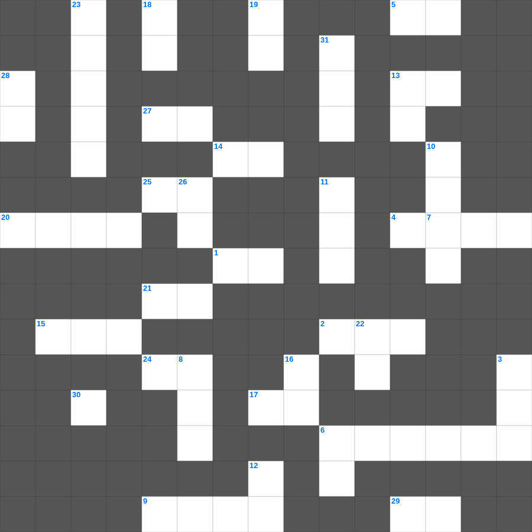

다니엘 마무리 & 호세아 마스터
📌 서비스 정의
십자가로세로는 교회 주보와 주일학교에서 사용할 수 있는 성경 기반 가로세로 퍼즐 서비스입니다. 성경 인물, 사건, 핵심 구절을 바탕으로 제작되었습니다. 온라인 풀이 및 인쇄 기능을 제공합니다.
📖 다니엘란?
다니엘은 바벨론 포로로 끌려간 다니엘과 친구들이 이방 왕궁에서 신앙을 지킨 이야기와, 미래에 대한 예언적 환상을 담고 있습니다.
📚 다니엘의 주요 사건·주제
다니엘과 세 친구의 신앙 결단 · 느부갓네살의 꿈 해석 · 풀무불 속의 세 친구 · 사자굴 속의 다니엘 · 일흔 이레와 종말 환상
다니엘의 말씀을 퀴즈로 배우는 다니엘 성경공부 자료입니다. 가로 힌트와 세로 힌트를 보고 35개의 단어를 맞춰보세요. 인쇄도 가능하고 정답 확인도 바로 되니 소그룹 모임이나 가정 예배 시간에도 활용하실 수 있습니다.

📝 가로 힌트
1. 배신하며 조급하며 자만하며 이것 사랑하기를 하나님 사랑하는 것보다 더하며
2. 에스라 1장부터 10장까지의 전체 기간 (약 몇 년)
4. 나를 푸른 풀밭에 누이시며 쉴 만한 이것으로 인도하시는도다
5. 요시야가 제거한 것 '가증한 것들과 산당과 이것'
6. 부한 자들에게 소망을 어디에 두지 말라고 했나
7. 요한삼서의 수신자: 내가 참으로 사랑하는 이 사람
9. 지혜로운 자의 혀는 지식을 선히 베풀고 미련한 자의 입은 이것을 쏟느니라
13. 내가 어렸을 때에는 말하는 것이 어린아이와 같고 깨닫는 것이 어린아이와 같고 이것 하는 것이 어린아이와 같다가
14. 성령의 인치심은 우리 기업의 이것이 되사 그 얻으신 것을 속량하시고
15. 불길 같이 일어나니 그 기세가 이것의 불과 같으니라
17. 내가 믿나이다 나의 이것 없는 것을 도와 주소서 하더라
20. 아브람을 택하시고 이름을 이것이라 고치신 하나님
21. 네 양 떼의 형편을 부지런히 살피며 네 이것에게 마음을 두라
24. 이는 우리로 진리를 위하여 함께 이것하는 자가 되게 하려 함이라
25. 내가 주 안에서 유오디아를 권하고 순두게를 권하노니 주 안에서 같은 이것을 품으라
27. 왕이 유다 왕 여호야긴의 머리를 들어 주었고 죄수의 이것을 벗겨 주었더라
29. 내가 금식하며 베옷을 입고 재를 덮어쓰고 주 하나님께 기도하며 이것하기를 결심하고
📝 세로 힌트
3. 주의 법도를 따르는 자는 큰 평안이 있으니 그들에게 이것이 없으리이다
6. 구하여도 받지 못함은 이것으로 쓰려고 잘못 구하기 때문이라
7. 무화과나무의 이것이 연하여지고 잎사귀를 내면 여름이 가까운 줄을 아나니
8. 포로 생활 70년이 차자 해방령을 내린 바사(페르시아)의 왕
10. 자기를 낮추시고 죽기까지 복종하셨으니 곧 이것에 죽으심이라
10. 내가 그리스도와 함께 이것에 못 박혔나니 그런즉 이제는 내가 사는 것이 아니요 오직 내 안에 그리스도께서 사시는 것이라
11. 넷째 인을 떼실 때 나온 말의 색깔
12. 너희는 이것이 여호와의 성전이라, 여호와의 성전이라 하는 거짓말을 믿지 말라
13. 모든 이론을 무너뜨리며 하나님 아는 것을 대적하여 높아진 것을 다 무너뜨리고 모든 이것을 사로잡아 그리스도에게 복종하게 하니
16. 슬픔이 이것보다 나음은 얼굴에 근심하는 것이 마음에 유익하기 때문이니라
18. 사람에게는 버린 바가 되었으나 하나님께는 택하심을 입은 보배로운 이것이신 예수께 나아가
19. 여호와는 은혜로우시며 이것이 많으시며 노하기를 더디 하시며
22. 에스더서의 마지막 장수
23. 여호와여 주는 나의 찬송이시오니 나를 고치소서 그리하시면 내가 이것 하겠나이다
26. 계시록 17장: 일곱 머리와 열 뿔을 가진 짐승 위에 앉은 존재
28. 무리가 그들의 칼을 쳐서 이것을 만들고 그들의 창을 쳐서 낫을 만들 것이며
30. 내가 옷을 벗었으니 어찌 다시 입겠으며 내가 이것을 씻었으니 어찌 다시 더럽히랴마는
31. 속이는 자 같으나 참되고 이것 자 같으나 유명하고
🧩 이 퍼즐에서 배우는 내용
이 퍼즐은 다니엘 마무리 & 호세아 마스터의 핵심 단어와 개념을 자연스럽게 복습할 수 있도록 구성되었습니다. 주일학교 수업이나 개인 성경공부에서 학습 내용을 점검하는 용도로 바로 활용할 수 있습니다.
🧑🏫 교회 교육 자료 활용
이 퍼즐은 주일학교 교재 추천 자료로 활용할 수 있고, 주일학교 주보에 넣기 좋은 분량으로 구성되어 있습니다. 수업용 주일학교 교안에 활동지로 붙이거나, 예배 후 복습용 주일학교 공과교재로 바로 사용할 수 있습니다.
🏷️ 키워드
다니엘 성경공부 자료, 다니엘, 십자가로세로, 성경퀴즈, 말씀퀴즈, 가로세로퍼즐, 주일학교 교재 추천, 주일학교 주보, 주일학교 교안, 주일학교 공과교재